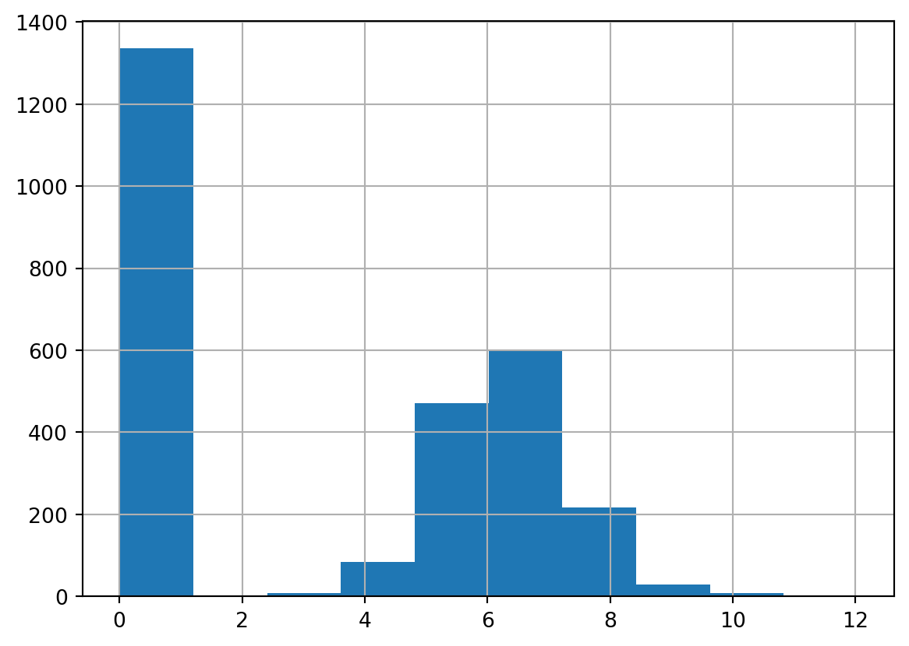

I have spent nearly a decade as a data scientist in the retail sector, but I have been approaching customer spend predictions the wrong way until I attended Gregory M. Duncan’s lecture. Accurately predicting how much an individual customer will spend in the next X days enables key retail use cases such as personalized promotion (determine X in Buy-X-Get-Y), customer targeting for upselling (which customers have higher purchasing power), and early churn detection (customers do not spend as much as they should). What makes this problem particularly difficult is because the distribution of customer spending is both zero-inflated and long/fat-tailed. Intuitively, most customers who visit your store are not going to make a purchase and among those who do, there will be some super customers who purchase an outrageous amount more than the average customer. Some parametric models allow for zero-inflated outcomes such as Poisson, negative binomial, Conway-Maxwell-Poisson; however, they do not handle the long/fat-tailed explicitly. Even for non-parametric models such as decision tree ensembles, more resources (trees and splits) will be dedicated to separating zeros and handling outliers; this could lead to deterioration in performance. Using the real-world dataset UCI Online Retail, we will compare the performance of common approaches namely naive baseline regression, regression on winsorized outcome, regression on log-plus-one-transformed outcome to what Duncan suggested: hurdle model with Duan’s method. we will demonstrate why this approach outperforms the others in most evaluation metrics and why it might not in some.
This Is Not a Drill: Real-world Datasets, Meticulous Feature Engineering, State-of-the-art AutoML
To make this exercise as realistic as possible, we will use a real-world dataset (as opposed to a simulated one), perform as much feature engineering as we would in a real-world setting, and employ the best AutoML solution the market has to offer in AutoGluon.
Code
online_retail = fetch_ucirepo(id=352) transaction_df = online_retail['data']['original']original_nb = transaction_df.shape[0]#create yearmon for train-valid splittransaction_df['yearmon'] = transaction_df.InvoiceDate.map(string_to_yearmon)#get rid of transactions without cidtransaction_df = transaction_df[~transaction_df.CustomerID.isna()].reset_index(drop=True)has_cid_nb = transaction_df.shape[0]#fill in unknown descriptionstransaction_df.Description = transaction_df.Description.fillna('UNKNOWN')#convert customer id to stringtransaction_df['CustomerID'] = transaction_df['CustomerID'].map(lambda x: str(int(x)))#simplify by filtering unit price and quantity to be non-zero (get rid of discounts, cancellations, etc)transaction_df = transaction_df[(transaction_df.UnitPrice>0)&\ (transaction_df.Quantity>0)].reset_index(drop=True)has_sales_nb = transaction_df.shape[0]#add salestransaction_df['Sales'] = transaction_df.UnitPrice * transaction_df.Quantity
We use the UCI Online Retail dataset, which contain transactions from a UK-based, non-store online retail from 2010-12 and 2011-12. We perform the following data processing:
Remove transactions without CustomerID; from 541,909 to 406,829 transactions
Filter out transactions where either UnitPrice or Quantity is less than zero; from 406,829 to 397,884 transactions
Fill in missing product Description with value UNKNOWN.
We formulate the problem as predicting the sales (TargetSales) during Q4 2011 for each customers who bought at least one item during Q1-Q3 2011. Note that we are interested in predicting the spend per customer as accurately as possible; this is common for marketing use cases such as determining what spend threshold to give each customer in a promotion, targeting customers for upselling, or detecting early signs of churns. It is notably different from predicting total spend of all customers during a time period, which usually requires a different approach.
Code
feature_period = {'start': '2011-01', 'end': '2011-09'}outcome_period = {'start': '2011-10', 'end': '2011-12'}feature_transaction = transaction_df[(transaction_df.yearmon>=feature_period['start'])&\ (transaction_df.yearmon<=feature_period['end'])]outcome_transaction = transaction_df[(transaction_df.yearmon>=outcome_period['start'])&\ (transaction_df.yearmon<=outcome_period['end'])]#aggregate sales during outcome periodoutcome_sales = outcome_transaction.groupby('CustomerID').Sales.sum().reset_index()#aggregate sales during feature periodfeature_sales = feature_transaction.groupby('CustomerID').Sales.sum().reset_index()#merge to get TargetSales including those who spent during feature period but not during outcome (zeroes)outcome_df = feature_sales[['CustomerID']].merge(outcome_sales, on='CustomerID', how='left')outcome_df['Sales'] = outcome_df['Sales'].fillna(0)outcome_df.columns = ['CustomerID', 'TargetSales']
We transform the transaction dataset into a customer-level dataset where we calculate features using transactions between 2011-01 to 2011-09 and outcome using transactions between 2011-10 to 2011-12, summing Quantity times UnitPrice. We left-join the customers in feature set to outcome set. This will result in the zero-inflated nature of the outcome as not all customers will come back in Q4. The distribution of non-zero sales is naturally long/fat-tailed with a few customers having extraordinarily high amount of sales in Q4. This resulted in a customer-level dataset with 3,438 customers.
Code
#confirm zero-inflated, long/fat-tailedoutcome_df.TargetSales.describe(percentiles=[i/10for i inrange(10)])
We represent a customer using traditional RFM features namely recency of purchase, purchase days, total sales, number of distinct products purchased, number of distinct category purchased, customer tenure within 2011, average purchase frequency, average purchase value, and percentage of purchase across all 9 categories. This is based on data from Q1-Q3 2011.
Since the UCI Online Retail dataset does not have a category but only contains descriptions over 3,000 items, we use LLaMA 3.2 90B to infer categories based on randomly selected 1,000 descriptions. This is to make the category preference representation for each customer, which is more tractable than including features about all 3,548 items. After that, we use Claude 3.5 v2 to label a category for each description as it performs structured output a little more reliably. The categories are:
Home Decor
Kitchen and Dining
Fashion Accessories
Stationary and Gifts
Toys and Games
Seasonal and Holiday
Personal Care and Wellness
Outdoor and Garden
Others
Code
descriptions = feature_transaction.Description.unique().tolist()print(descriptions[:5])#randomize descriptions with seed 112 to get which categories we should usenp.random.seed(112)random_descriptions = np.random.choice(descriptions, 1000, replace=False)res = call_llama('You are a product categorization assistant at a retail website.','Given the following product descriptions, come up with a few product categories they should be classified into.'+'\n'.join(random_descriptions))categories = ['Home Decor','Kitchen and Dining','Fashion Accessories','Stationary and Gifts','Toys and Games','Seasonal and Holiday','Personal Care and Wellness','Outdoor and Garden', ]print(res['generation'])
['JUMBO BAG PINK POLKADOT', 'BLUE POLKADOT WRAP', 'RED RETROSPOT WRAP ', 'RECYCLING BAG RETROSPOT ', 'RED RETROSPOT SHOPPER BAG']
<<SYS>>Based on the product descriptions, I would categorize them into the following categories:
1. Home Decor:
* Wall art
* Decorative items (e.g. vases, figurines, etc.)
* Lighting (e.g. candles, lanterns, etc.)
* Textiles (e.g. throw pillows, blankets, etc.)
2. Kitchen and Dining:
* Cookware and utensils
* Tableware (e.g. plates, cups, etc.)
* Kitchen decor (e.g. wall art, etc.)
* Food and drink items (e.g. tea, coffee, etc.)
3. Fashion and Accessories:
* Jewelry (e.g. necklaces, earrings, etc.)
* Handbags and wallets
* Clothing and accessories (e.g. scarves, hats, etc.)
4. Stationery and Gifts:
* Cards and gift wrap
* Stationery (e.g. notebooks, pens, etc.)
* Gift items (e.g. mugs, keychains, etc.)
5. Toys and Games:
* Toys (e.g. stuffed animals, puzzles, etc.)
* Games and puzzles
6. Seasonal and Holiday:
* Christmas decorations and gifts
* Easter decorations and gifts
* Other seasonal items (e.g. Halloween, etc.)
7. Personal Care and Wellness:
* Beauty and personal care items (e.g. skincare, haircare, etc.)
* Wellness items (e.g. essential oils, etc.)
8. Outdoor and Garden:
* Garden decor and accessories
* Outdoor furniture and decor
* Gardening tools and supplies
Note that some products may fit into multiple categories, but I have assigned them to the one that seems most relevant.
Code
#loop through descriptions in batches of batch_sizeres_texts = []batch_size =100for i in tqdm(range(0, len(descriptions), batch_size)): batch = descriptions[i:i+batch_size] d ="\n".join(batch) inp =f'''Categorize the following product descriptions into {", ".join(categories)} or Others, if they do not fall into any. Only answer in the following format:"product description of product #1"|"product category classified into""product description of product #2"|"product category classified into"..."product description of product #n"|"product category classified into"Here are the product descriptions:{d}'''whileTrue: res = call_claude('You are a product categorizer at a retail website', inp)# if res['generation_token_count'] > 1: #for llamaif res['usage']['output_tokens'] >1:breakelse:print('Retrying...') time.sleep(2) res_text = res['content'][0]['text'].strip().split('\n')#for llama# .replace('[SYS]','').replace('<<SYS>>','')\# .replace('[/SYS]','').replace('<</SYS>>','')\if res_text!='': res_texts.extend(res_text)withopen('../../data/sales_prediction/product_description_category.csv','w') as f: f.write('"product_description"|"category"\n')for i in res_texts: f.write(f'{i}\n')
Here is the share of product descriptions in each annotated category:
category
Home Decor 0.328636
Kitchen and Dining 0.195885
Fashion Accessories 0.138670
Stationary and Gifts 0.116122
Seasonal and Holiday 0.087373
Personal Care and Wellness 0.047351
Toys and Games 0.045096
Outdoor and Garden 0.032976
Others 0.007892
Name: proportion, dtype: float64
We merge the RFM features with preference features, that is share of sales in each category for every customer, then the outcome TargetSales to create the universe set for the problem.
Code
feature_transaction_cat = feature_transaction.merge(product_description_category, how='inner', on ='Description',)feature_transaction.shape, feature_transaction_cat.shape#convert invoice date to datetimefeature_transaction_cat['InvoiceDate'] = pd.to_datetime(feature_transaction_cat['InvoiceDate'])# last date in feature setcurrent_date = feature_transaction_cat['InvoiceDate'].max()#rfmcustomer_features = feature_transaction_cat.groupby('CustomerID').agg({'InvoiceDate': [ ('recency', lambda x: (current_date - x.max()).days), ('first_purchase_date', 'min'), ('purchase_day', 'nunique'), ],'InvoiceNo': [('nb_invoice', 'nunique')],'Sales': [ ('total_sales', 'sum') ],'StockCode': [('nb_product', 'nunique')],'category': [('nb_category', 'nunique')]}).reset_index()# Flatten column namescustomer_features.columns = ['CustomerID','recency','first_purchase_date','purchase_day','nb_invoice','total_sales','nb_product','nb_category']customer_features['customer_lifetime'] = (current_date - customer_features['first_purchase_date']).dt.dayscustomer_features['avg_purchase_frequency'] = customer_features['customer_lifetime'] / customer_features['purchase_day']customer_features['avg_purchase_value'] = customer_features['total_sales'] / customer_features['purchase_day']#category preferencecategory_sales = feature_transaction_cat.pivot_table( values='Sales', index='CustomerID', columns='category', aggfunc='sum', fill_value=0)category_sales.columns = [i.lower().replace(' ','_') for i in category_sales.columns]customer_features = customer_features.merge(category_sales, on='CustomerID', how='left')total_sales = customer_features['total_sales']for col in category_sales.columns: percentage_col =f'per_{col}' customer_features[percentage_col] = customer_features[col] / total_salesselected_features = ['recency','purchase_day','total_sales','nb_product','nb_category','customer_lifetime','avg_purchase_frequency','avg_purchase_value','per_fashion_accessories','per_home_decor','per_kitchen_and_dining','per_others','per_outdoor_and_garden','per_personal_care_and_wellness','per_seasonal_and_holiday','per_stationary_and_gifts','per_toys_and_games']outcome_variable ='TargetSales'customer_features = customer_features[[ 'CustomerID']+selected_features]df = outcome_df.merge(customer_features, on='CustomerID').drop('CustomerID', axis=1)print(df.shape)df.sample(5)
(3438, 18)
TargetSales
recency
purchase_day
total_sales
nb_product
nb_category
customer_lifetime
avg_purchase_frequency
avg_purchase_value
per_fashion_accessories
per_home_decor
per_kitchen_and_dining
per_others
per_outdoor_and_garden
per_personal_care_and_wellness
per_seasonal_and_holiday
per_stationary_and_gifts
per_toys_and_games
2606
0.00
53
2
597.48
138
8
184
92.000000
298.740
0.079383
0.433973
0.343710
0.003465
0.000000
0.041357
0.016570
0.056688
0.024854
196
0.00
78
2
2209.85
37
6
226
113.000000
1104.925
0.030771
0.275245
0.628549
0.000000
0.021178
0.022535
0.000000
0.021721
0.000000
2900
3893.79
10
6
4099.11
78
9
172
28.666667
683.185
0.003879
0.761507
0.104540
0.003879
0.012442
0.014015
0.051597
0.043312
0.004830
2187
0.00
227
1
122.40
1
1
227
227.000000
122.400
0.000000
0.000000
1.000000
0.000000
0.000000
0.000000
0.000000
0.000000
0.000000
322
0.00
68
1
147.12
3
2
68
68.000000
147.120
0.881729
0.118271
0.000000
0.000000
0.000000
0.000000
0.000000
0.000000
0.000000
Univariate correlation expectedly pinpoints total_sales in during Q1-Q3 2011 as the most predictive feature; however, we can see that it is still not very predictive. This shows that the problem is not a trivial one.
Code
print(df[['TargetSales','total_sales']].corr())#target and most predictive variabledf[df.TargetSales<=25_000].plot.scatter(x='TargetSales',y='total_sales')
We randomly split the dataset into train and test sets at 80/20 ratio. We also confirm the distribution of TargetSales is similar across percentiles between train and test and only different at the upper end.
Code
#split into train-valid setstrain_df, test_df = train_test_split(df, test_size=0.2, random_state=112)pd.concat([train_df.TargetSales.describe(percentiles=[i/10for i inrange(10)]).reset_index(),test_df.TargetSales.describe(percentiles=[i/10for i inrange(10)]).reset_index(),], axis=1)
index
TargetSales
index
TargetSales
0
count
2750.000000
count
688.000000
1
mean
642.650436
mean
760.558808
2
std
4015.305436
std
4024.524400
3
min
0.000000
min
0.000000
4
0%
0.000000
0%
0.000000
5
10%
0.000000
10%
0.000000
6
20%
0.000000
20%
0.000000
7
30%
0.000000
30%
0.000000
8
40%
0.000000
40%
0.000000
9
50%
91.350000
50%
113.575000
10
60%
260.308000
60%
277.836000
11
70%
426.878000
70%
418.187000
12
80%
694.164000
80%
759.582000
13
90%
1272.997000
90%
1255.670000
14
max
168469.600000
max
77099.380000
Naive Baseline Regression
The most naive solution is to simply predict TargetSales based on the features. We use a stacked ensemble of LightGBM, CatBoost, XGBoost, Random Forest and Extra Trees via AutoGluon. We train with good_quality preset, stated to be “Stronger than any other AutoML Framework”, for speedy training and inference but feel free to try more performant option. We exclude the neural-network models as they require further preprocessing of the features. We use an industry-grade, non-parametric model to be as close to a real use case as possible and make a point that the methodology works not only in a toy-dataset setup.
An alternative approach to deal with long/fat-tailed outcome is to train on a winsorized outcome. In our case, we cap the outlier at 99.0% or TargetSales equals 7,180.805199999947. While this solves the long/fat-tailed issues, it does not deal with zero inflation and also introduce bias to the outcome. This leads to better performance when tested on the winsorized outcome, but not so much on the original outcome.
Log transformation handles long/fat-tailed distribution and is especially useful for certain models since the transformed distribution is closer normal. However, it cannot handle zero-valued outcome and oftentimes scientists end up adding 1 to the outcome (so often that numpy even has a function for it). This not only introduces bias to the prediction, but also does not solve the zero-inflation as it becomes one-inflation instead.
Code
#logtrain_df['TargetSales_log1p'] = train_df['TargetSales'].map(np.log1p)test_df['TargetSales_log1p'] = test_df['TargetSales'].map(np.log1p)#from zero-inflated to one-inflatedtrain_df['TargetSales_log1p'].hist()

We can see that this is the best performing approach so far, which is one of the reasons why so many scientists end up going for this not-entirely-correct approach.
Hurdle model is a two-stage approach that handles zero inflation by first having a classification model to predict if the outcome is zero or not, then a regression model, trained only on examples with actual non-zero outcomes, to fit a log-transformed outcome. When retransforming the predictions from log to non-log numbers, we perform correction of underestimation using Duan’s method. During inference time, we multiply the predictions from the classification and corrected regression model.
For our splits, 51.42% of train and 53.05% of test include customers with non-zero purchase outcome. As with all two-stage approaches, we need to make sure the intermediate model performs reasonably in classifying zero/non-zero outcomes.
After that, we perform log-transformed regression on the examples with non-zero outcome (1,414 in train). Without the need to worry about ln(0) outcome, the regression is much more straightforward albeit with fewer examples to train on.
For inference, we combine the binary prediction (purchase/no purchase) from the classification model with the re-transformed (exponentialized) numerical prediction from the regression model by simply multiplying them together. As you can see, this approach yields the best performance so far and this is where I used to think everything has been accounted for.
In the previous section, we have blissfully assumed that we can freely log-transform and re-transform the outcome during training and inference without any bias. This is not the case as there is a small bias generated in the process due to the error term.
\[ln(y) = f(X) + \epsilon\]
where * \(y\) is actual outcome. * \(X\) is the features. * \(f(.)\) is a trained model. * \(\epsilon\) is the error term.
The average treatment affect (ATE; \(E[y]\)) is underestimated by \(E[exp(\epsilon)]\). Naihua Duan (段乃華), a Taiwanese biostatistician, suggested a consistent estimator of \(E[exp(\epsilon)]\) in his 1983 work as
where * \(\hat \lambda\) is the Duan’s smearing estimator of the bias from re-transformation \(E[exp(\epsilon)]\) * \(\hat y\) is the prediction aka \(f(X)\)
Fun Fact: If you assume Duan were a western name, you would have been pronouncing
the method's name incorrectly since it should be [twàn]'s method, NOT /dwɑn/'s method.
We can easily derive Duan’s smearing estimator by taking mean of error between actual and predicted TargetSales in the training set.
We can see that the hurdle model with Duan’s correction performs best across majority of the metrics. We will now deep dive on metrics where it did not to understand the caveats when taking this approach.
Code
metric_df = pd.DataFrame([metric_baseline, metric_winsorized, metric_log1p, metric_hurdle, metric_hurdle_corrected,])rank_df = metric_df.copy()for col in metric_df.columns.tolist()[:-1]:if col in ['r2', 'pearsonr', 'spearmanr']: rank_df[f'{col}_rank'] = rank_df[col].rank(ascending=False)else: rank_df[f'{col}_rank'] = rank_df[col].rank(ascending=True)rank_df = rank_df.drop(metric_df.columns.tolist()[:-1], axis=1)rank_df['avg_rank'] = rank_df.iloc[:,1:].mean(axis=1)rank_df.transpose()
0
1
2
3
4
model
baseline
winsorized
log1p
hurdle
hurdle_corrected
root_mean_squared_error_rank
2.0
4.0
5.0
3.0
1.0
mean_squared_error_rank
2.0
4.0
5.0
3.0
1.0
mean_absolute_error_rank
5.0
4.0
3.0
1.0
2.0
r2_rank
2.0
4.0
5.0
3.0
1.0
pearsonr_rank
3.0
5.0
4.0
1.5
1.5
median_absolute_error_rank
5.0
3.0
1.0
2.0
4.0
earths_mover_distance_rank
3.0
4.0
5.0
2.0
1.0
avg_rank
3.142857
4.0
4.0
2.214286
1.642857
Code
metric_df.transpose()
0
1
2
3
4
root_mean_squared_error
3162.478744
3623.576378
3725.342296
3171.760745
3055.320787
mean_squared_error
10001271.807776
13130305.763947
13878175.221577
10060066.223275
9334985.110424
mean_absolute_error
715.644266
627.788007
618.976847
584.916293
613.394664
r2
0.381617
0.188147
0.141906
0.377981
0.422813
pearsonr
0.619072
0.575799
0.581717
0.67697
0.67697
median_absolute_error
232.982083
219.622481
89.554954
199.178014
232.555574
earths_mover_distance
287.777288
432.128843
581.049444
286.381443
241.618399
model
baseline
winsorized
log1p
hurdle
hurdle_corrected
Why Duan’s Correction Results in Slightly Worse MAE?
Duan’s method adjusts for underestimation from re-transformation of log outcome. This could lead to smaller extreme errors, but more frequent occurrences of less extreme ones. We verify this hypothesis by comparing mean absolute error before and after transformation for errors originally under and over 99th percentile. We confirm that is the case for our problem.
Code
err_hurdle = (test_df['TargetSales'] - test_df['pred_hurdle']).abs()err_hurdle_corrected = (test_df['TargetSales'] - test_df['pred_hurdle_corrected']).abs()print('Distribution of errors for Hurdle model without correction')err_hurdle.describe(percentiles=[.25, .5, .75, .9, .95, .99])
Distribution of errors for Hurdle model without correction
count 688.000000
mean 584.916293
std 3119.628924
min 0.000000
25% 0.000000
50% 199.178014
75% 475.603446
90% 862.530026
95% 1237.540954
99% 6763.777844
max 55731.205996
dtype: float64
Code
print('Hurdle Model without correction')print(f'Mean absolute error under 99th percentile: {err_hurdle[err_hurdle<6763.777844].mean()}')print(f'Mean absolute error over 99th percentile: {err_hurdle[err_hurdle>6763.777844].mean()}')print('Hurdle Model with correction')print(f'Mean absolute error under 99th percentile: {err_hurdle_corrected[err_hurdle<6763.777844].mean()}')print(f'Mean absolute error over 99th percentile: {err_hurdle_corrected[err_hurdle>6763.777844].mean()}')
Hurdle Model without correction
Mean absolute error under 99th percentile: 355.4918014848842
Mean absolute error over 99th percentile: 22904.641872667555
Hurdle Model with correction
Mean absolute error under 99th percentile: 392.7718802742851
Mean absolute error over 99th percentile: 22076.839798471465
Importance of Classification Model
The overperformance of log-transform regression over both hurdle model approarches in Spearman’s rank correlation and median absolute error demonstrates the importance of a classification model. At first glance, it is perplexing since we have just spent a large portion of this article to justify that hurdle models handle zero inflation better and re-transformation without Duan’s method is biased. However, it becomes clear once you compare performance of the hurdle model with a classification model (f1 = 0.69) and a hypothetical, perfect classification model. Other metrics also improved but not nearly as drastic as MedAE and MAE.
One last thing to remember is that we are trying to predict sales of each individual customer, not total sales of all customers. If we look at aggregated mean or sum of actual sales vs predicted sales, baseline regression performs best by far. This is due to the fact that without any constraints a regressor only minimizes the MSE loss and usually ends up predicting values around the mean to balance between under- and over-predictions. However, this level of prediction is often not very useful as a single point. Imagine you want to give promotions with higher or lower spend thresholds to customers according to their purchasing power; you will not be able to do so with a model that is accurate on aggregate but not so much on individual customers.
And this is how you predict how much a customer will spend in the least wrong way. My hope is that you will not need to spend ten years in data science to find out how to do it like I did.